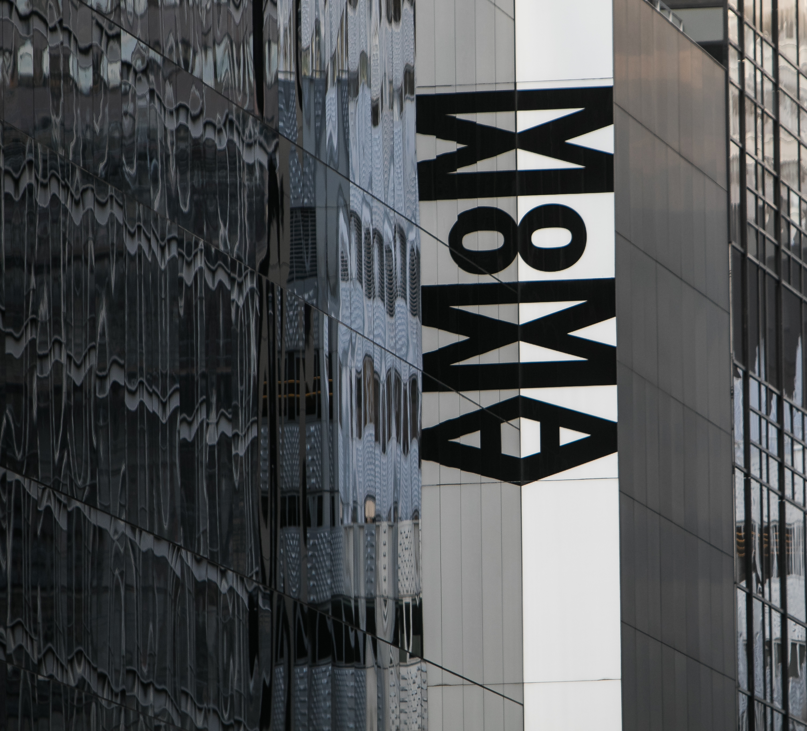

The Museum of Modern Art also referred to as MoMA, serves as one of the largest and most influential modern art museums in the world. The artworks include architecture, contemporary art, illustrations, paintings, photography, and sculptures. In addition to serving as a modern art museum, there is also the MoMA Library. Within, there are over 300,000 books, exhibition catalogs, and periodical titles to be found. Its archives serve as the primary resource when it comes to learning more about the history of contemporary and modern art. It is currently one of the most visited art museums in the world. With more than 150,000 individual pieces on display, MoMA also represents more than 13,000 artists. Its collection features important and familiar works from a number of artists. MoMa is one of the most expensive museums to visit in New York City. As of 2022, it charges an admission fee of $25.00 USD per adult. However, as part of the Uniqlo Free Friday Nights Program, the fees are waived after 5:30 PM. Also exempt from the fees are New York-based college students.
Image citation: https://stock.adobe.com/images/museum-of-modern-arts-lettering-and-its-mirror-reflection-in-windows/393219798?prev_url=detail Museum of Modern Arts lettering and its mirror reflection in windows Created by Roman Tiraspolsky.